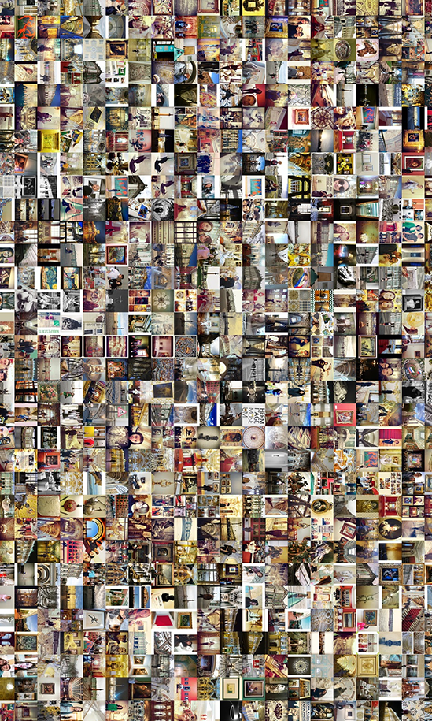

Визуализация данных
Для работы с большим массивом визуального материала мы использовали инструменты культурной аналитики и контент-анализ фотографий
Цветовые паттерны
Используя инструменты лаборатории культурной аналитики (Cultural Analytics Lab), мы распределили фотографии по их основному цвету.

Визуализации говорят о том, что среди фотографий преобладают изображения желто-красных оттенков и зелено-синих.
Большинство фотографий оказались желто-красных оттенков, что объясняется особым вниманием посетителей к произведениям искусства, фотографиям на их фоне, элементам внутреннего убранства музея, среди которых позолота, красный бархат и дерево.
К серо-зеленой гамме относятся все фотографии, на которых появляется изображение фасада Зимнего дворца, Дворца и Дворцовой площади, атлантов на Миллионной улице и Висячего сада Малого Эрмитажа в летнее время. Отдельно отметим популярность изображения лестницы, расположенной в Главном штабе. Изображения с основным синим цветом – это фотографии, снятые снаружи музея, на Дворцовой площади.


Содержание снимков фиолетового и красного цветов можно отнести к двум группам. Первая - это фотографии залов, в интерьере которых преобладают красные оттенки (Военная галерея Зимнего дворца, Петровский (Малый тронный) зал и Малый Итальянский просвет в здании Нового Эрмитажа. Вторая группа – фотографии, снятые преимущественно на временных выставках и посвященные артефактам современного искусства. Эти фотографии отличаются по цвету от основной коллекции музея и наименее представлены в Instagram-фотографиях.

Кроме цветных снимков, посетители музея делают черно-белые или серые фотографии, на которых изображены скульптура, пустота холлов, лестницы и иногда селфи. Этих фотографий небольшое количество (менее 2% от всех фото) и для их создания применялись фильтры: черно-белая обработка служит инструментом стилизации под «античный» вид. В изображении пустого пространства, минимализме деталей, иерархии информации и внимания можно проследить элементы визуальной Instagram-эстетики, которую принято относить к «дизайнерской» .
Фотографии музея в фильтрах Instagram
Среди фотографий Эрмитажа чуть более половины выкладывались такими, какие они есть, то есть никак не обрабатывались с помощью фильтров. Наиболее популярные фильтры - это Valencia (3,6%), Аmaro (3,5%), Clarendon (3%), Lo-fi (3%), Mayfair (3%), Juno (2,5%). Почему именно они используются и какие значения вкладывают посетители при их использовании, сказать весьма затруднительно. Распространено мнение о том, что все фильтры придают "винтажный" вид мобильным фотографиям. Выбор именно этих фильтров можно объяснить и тем, что в приложении они предлагались первыми во всей линейке фильтров.
Контент-анализ
Часть данных мы обрабатывали вручную, анализируя их содержание. Для этого мы отобрали 10% фотографий от всего массива данных и классифицировали по двум параметрам: что изображено на фото (живопись, скульптура, музейные интерьеры, фасады Зимнего Дворца) и как изображено (жесты, поза, организация пространства фотографии).
Самые популярные сюжеты. Мы условно разделили все фотографии на те, где запечатлены люди (38%), фотографии без людей (56%) и коллажи, где два сюжета часто комбинируются (6%).
Среди группы фотографий без людей большинство было снято вне музея (27%) - это преимущественно фотографии Дворцовой площади и Зимнего дворца. Далее по популярности идут предметы искусства (живопись и скульптура - 16% от всех фотографий), залы и элементы интерьера (9,5%), фотографии временных выставок и мероприятий музея (2,8%).
Как именно изображены посетители на фото?
Среди фотографий посетителей наиболее часто встречающийся сюжет – это фронтальное позирование, когда посетитель Эрмитажа смотрит в камеру (18,2%), далее идут селфи (8%), фотографии других людей в музее – изображения очередей, групп туристов и других посетителей (7,6%).
Как мы видим, пространство внутри и вне музея заслуживает одинакового внимания пользователей Instagram.